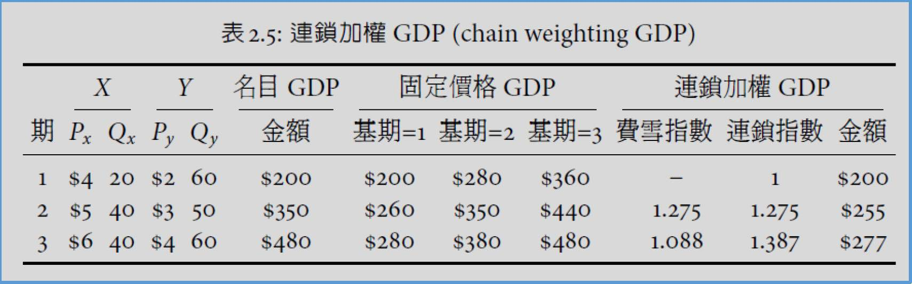
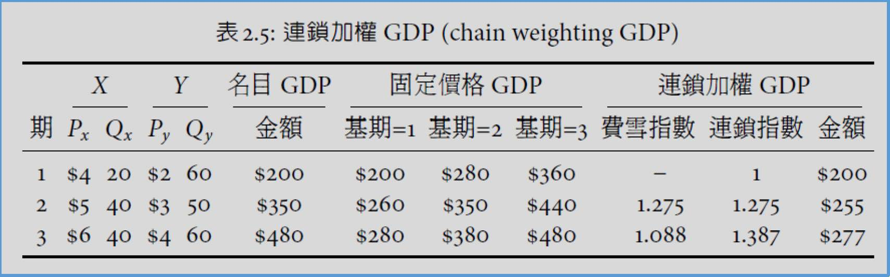
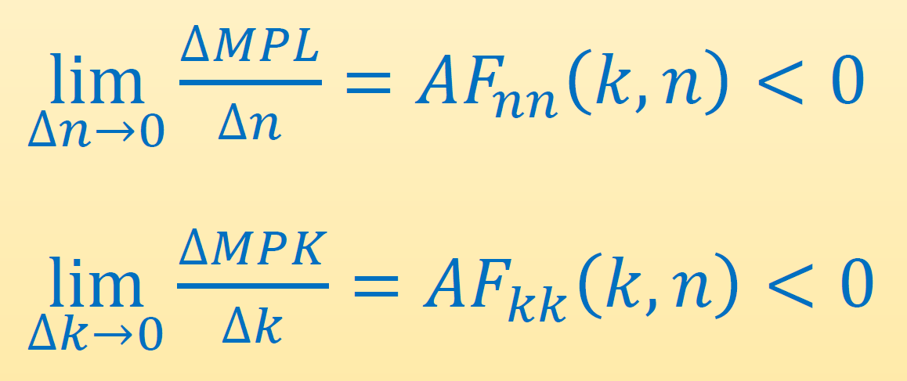
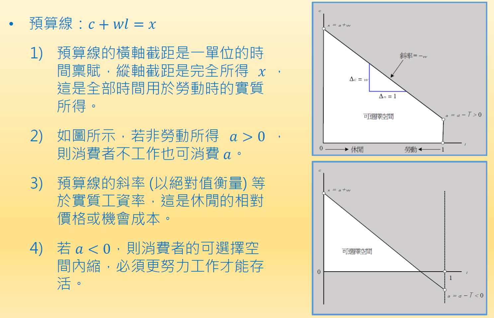
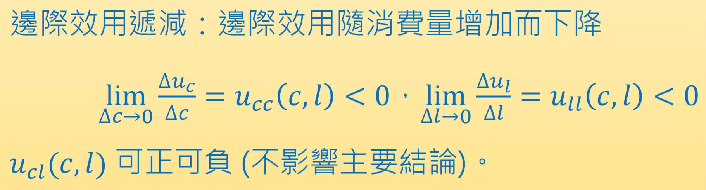
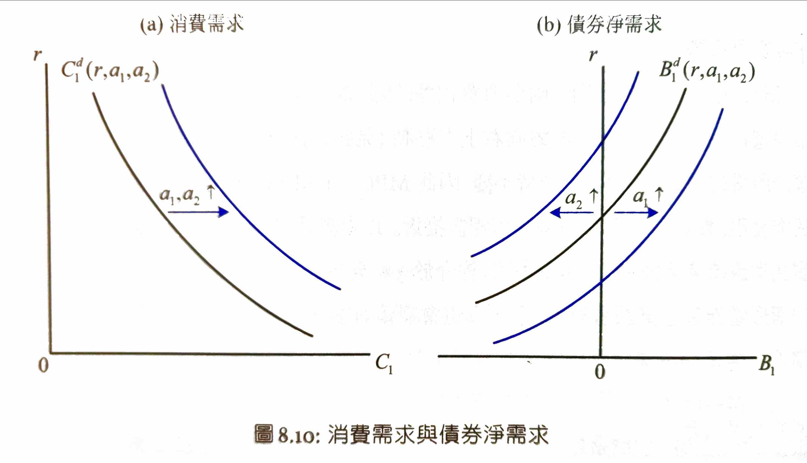
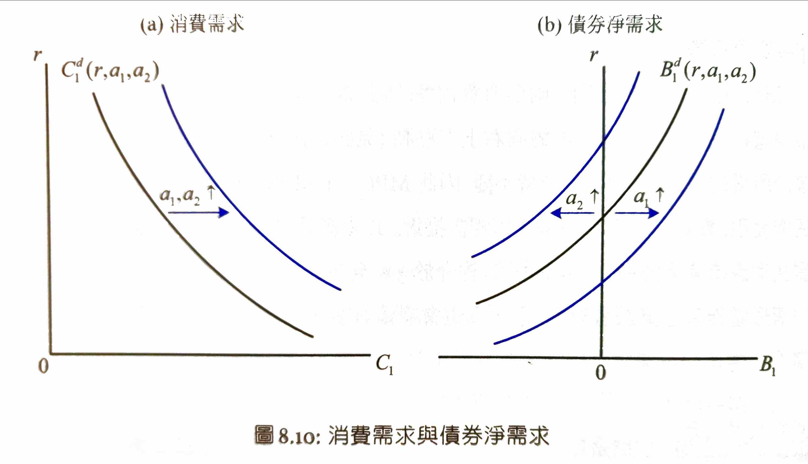
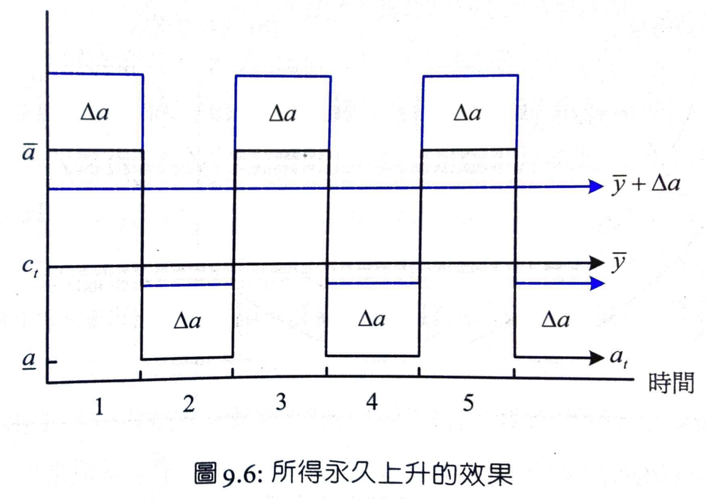
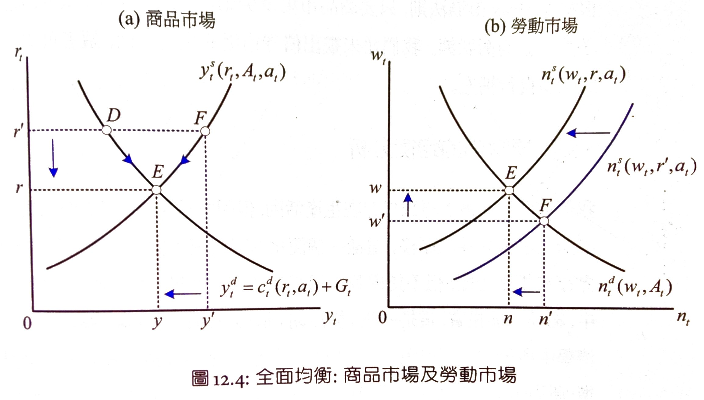
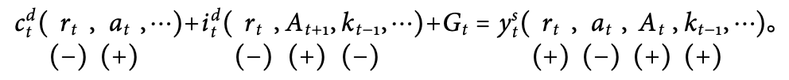

Macroeconomics¶
Resources¶
- videos
- slides and other materials
Ch1 intro¶
¶
- real GDP
- CPI
-
Inflation is always and everywhere a monetary phenomenon
- Milton Friedman - Philips curve
- CPI vs. unemployment rate
- 20th
- 21st
- 20th
- especially WW2
- transfer payment
- US GDP 10%
- e.g.
- 20th
- US
- 1970
- US
- Thomas Piketty : Capital in the Twenty First Century (2014)
- capital income national income

¶
- Classical School
- before 1930s
- rationality & equilibrium
- rationality: sustainable & predictable
- Say's Law
- (Keynes )
- Adam Smith
- The Economics of Keynes
- 1936-1950
- 1930s financial crisis
- Say's Law
- The General Theory if Employment, Interest and Money by Keynes
- Macroeconomics
- rationality & equilibrium
- animal spirits ()
- Rule of Thumb
- animal spirits ()
- general special
- economic depression by
- functional finance
- to
- WW2
- functional finance
- Neoclassical Synthesis
- 1950-1980
- stagnationUS
- Keynes
- Keynes
- Keynes
- +
- & Econometrics Keynesians
- New Classical School
- 1970-
- 1974 & 1980 energy crisis & inflation rate stagflation (stagnation+inflation)
- Philips curve
- Friedman
- inflation rate real inflation rate expected inflation rate
- inflation rate expected inflation rate expectations-augmented Philips curve (see Eurozone)
- inflation rate real inflation rate expected inflation rate
- Lucas
- Philips curve
- unexpected Inflation or
- Philips curve structural relationship
- Philips curve
- Friedman
- SDGE, Stochastic Dynamic General Equilibrium Model
- Keynes: "In the long run, we are all dead."
- New Keynesians
- New Neoclassical Synthesis
- 1995-
- new Keynesian Philips curve
- expected inflationinflation rate &
- structural relationship
- expected inflationinflation rate &
- ()
Ch2 ¶
GDP & GNI¶
- GDP, gross domestic product
- the market value of all final goods and services that an economy produces in a given period within its boarder
- GNI, gross national income / GNP, gross national product
- the market value of all final goods and services that an economy produces in a given period by its permanent residents
- the market value of all final goods and services that an economy produces in a given period by its permanent residents
- final output //
- -
- (labor & capital)
- GNI/GNP = GDP + NFIA
- NFIA, net factor income from abroad
- -
- {residents outside of broader}'s income
- {non-residents within broader}'s income
- e.g.
- -
- flow variable
- in a range of time
- GDP & GNI
- stock variable
- at a specific time
- goods and services
- &
- &
GDP ¶
- ?
- ?
¶
- SNA08
- GDP =
- / = -
- =
- SNA93 &
- SNA08 (R&D) &
- so 20 CPU & 10 10 CPU
¶
- Y = domestic output = GDP
- C = Consumption =
- 60-70%
- nondurables
- 2011 24%
- durables
- 2011 24%
- services
- 2011 52%
- nondurables
- I = Investment = /
- 20%
- 2011 15.8%
- 2011 5%
- /
- 2011 93%
- copyright fee
- SNA93
- SNA08 &
- Inventory accumulations
- -
- flow variable
- /
- DEP, depreciation
- /
- net investment = gross investment - depreciation
- NDP = GDP - DEP
- net domestic product
- NNI = GNI - DEP - net national income
- = +
- G = Goverment purchases =
- 2011 12.4%
- exclude transfer payments
- social welfare benefits
- exclude transfer payments
- NX = Net Exports = X - M = / trade surplus
- merchanting trade
- e.g. (iphone)
- (output-input) GDP
- X
- M
- merchanting trade
/¶
- National Income (NI)
- = + ( + + )
- etc.
- NIT () & DEP ()
- Net Indirect Tax (NIT) = -
- Net Indirect Tax (NIT) = -
- GDP = DI + ( DEP + NIT )
- GNI = NI + ( DEP + NIT )
- = + ()
- = Domestic Factor Income (DI) + NFIA
- = + ( + + )
real GDP¶
- nominal GDP / GDP at current price != real output
GDP (GDP at constant prices)¶
- base period GDP
- base period
GDP (chain-weighting GDP)¶
- Fisher Quantity Index \(F^Q_t\)
- GDP

- \(F_t^Q=\sqrt{(1+g_t^1)(1+g_t^2)}=1+\bar{g_t}\)
- \(\bar{g_t}\) =
- chained index
- GDP
- \(I_t=I_{t-1}\times F^Q_t= ...=F^Q_1\times F^Q_2\times ...\times F^Q_t\)
- chain-weighting GDP
- \(Y^C_t=I_t\times Y_0=(F^Q_1\times F^Q_2\times ...\times F^Q_t)\times Y_0\)
- \(Y_0\) = base period nominal GDP
- e.g.
- 
- ((260/200)x(350/280))^0.5=1.275
- 200x1.275=255
- ((38/35)x(48/44))^0.5=1.088
- 1.275x1.088=1.387
- 200x1.387=277
- 
- pros
- cons
- GDP=C+I+G+NX
GDP (purchasing power parity GDP)¶
- PPP-GDP
- international dollar
&¶
private saving¶
- household income
= + (TR) + (INT, interest income)
= GNI -
= (GDP + NFIA) -- = GNI
- private income
= +
= GNI + TR + INT
= GDP + NFIA + TR + INT - private disposable income
\(Y^P\)= ( + ) - TAX ( + )
= (GDP + NFIA + TR + INT) - TAX- TAX
- TAX
\(S^P\) = (\(Y^P\)) - (C)
= (GDP + NFIA + TR + INT) - TAX - C
government saving¶
- also knows as public saving
-
\(S^G\) = TAX - (G + TR + INT)
= +
= -- budget surplus = -
= TAX - (G + TR + INT + ) - TAX
- budget surplus = -
national saving¶
- S () = \(S^P\) () + \(S^G\) ()
= GNI () - ( C () + G () )
= (GDP + NFIA) - (C + G)
= (C + I + G + NX + NFIA) - (C + G)
= I + (NX + NFIA)
= I () + CA () - -
= gross national saving -
= net national saving - (CA, current account) = (NX) + (NFIA)
- =
- CA > 0 i.e.
- current account + (capital account) = 0
- S = I + CA
- (I)
- or
- Keynesian: paradox ot thrift
- save income overall saving drop in the long term
- Keynesian: paradox ot thrift
- or
- (CA) i.e.
- e.g. US treasury OR (???????????????? )
- CA > 0 excessive saving
- = + (I)
- = + (CA)
- (I)
price index, general price level¶
GDP (GDP Deflator)¶
- GDP Deflator = nominal GDP / GDP x 100
- base period: 0
- sum{ i x GDP } i.e.
- intuition:
- Paasche index,
- inflation
- a a (substitution effect)
- inflation
(CPI, consumer price index)¶
- retail price
- WPI wholesale price
- base period: 0
- intuition:
- Laspeyres index, base period i.e.
- inflation
PCE deflator, personal consumption expenditures deflator¶
- Fisher Price Index \(F^P_t\)
- like Fisher Quantity Index \(F^Q_t\) but price
- (Paasche) & (Laspeyres)
- \(F^P_t\times F^Q_t=\dfrac{Y_t}{Y_{t-1}}\)
i.e. x = GDP
- \(P^C_t=F^P_1\times F^P_2\times...\times F^P_t\)
- \(P^C_t\times Y^C_t=Y_t\)
i.e. x GDP = GDP - Paasche & Laspeyres inflation
- Fed
e.g.¶
- 350/260 = 1.346
- 280/200 = 1.400
- (1.3461.4)*0.5 = 1.373
- ((440/350)(480/380))*0.5 = 1.260
- 1.373*1.260 = 1.730
Problems¶
Ch3 ¶
- business cycle
- real GDP stochastic process
filtering¶
- = +
- = & /
¶
- = \(\dfrac{y_t-y_{t-1}}{y_t}=\ln y_t-\ln y_{t-1}\)
- \(\ln y_t\) vs. t =
- \(\ln y_t\) vs. t =
- over differencing
\(\ln \bar{y_t}=\alpha+\beta t\) \(\alpha\)- not a function of
- \(\alpha\) under differencing
- not a function of
HP ¶
- Hodrick-Perscott filter
- &
- linear
- \(\lambda\) weight
- \(\lambda=1600\) for
- \(\lambda=100\) for
- HP = \(\ln y_t-\ln \bar{y_t}\)
- HP
¶
¶
- 1973
¶
- 1979 Iran 1980
¶
- 1985
¶
- #
- 1990 Iraq
¶
- 1995-1996
- NBER
¶
- 1997 George Sorus
- ???
dot-com bubble¶
- 20th
- 1999 9212000 & 911
¶
- 2007
- #dot-com bubble US
- 2010-11
- US QE
3 ¶
volatility¶
- T-1
- non-stationary #filtering stationary
- HP stationary
- s.t. i.e.
- non-stationary #filtering stationary
co-movement¶
- pro-cyclical
- x y covariance > 0
- counter-cyclical
- x y covariance < 0
- covariance bc x or y or
- correlation \(\centernot{\implies}\) causation
- x y
- e.g. y=|x| = 0
persistence¶
- auto-covariance
- j covariance
- j (intuitive)
- cross auto-covariance
- x j y covariance
- j > 0
- j < 0
- \(p_{xy}(-1)>0\)
- Granger causality test
¶
¶
- smooth consumption
- <
- \(c=a+by\) \((a>0 \implies c>by)\)
- \(\dfrac{c-\bar{c}}{\bar{c}}=b\dfrac{\bar{y}}{\bar{c}}\dfrac{y-\bar{y}}{\bar{y}}<\dfrac{y-\bar{y}}{\bar{y}}\)
- save i.e.
- bc
- >
- (just as )
- # national saving if
- smooth consumption
- multiplier-accelerator model
- >
- <
- labor hoarding
- hire & fire &
- leisure consumption
- labor hoarding
- inflation rate & real interest rate >
- real interest rate = &
¶
- &
- real GDP
- &
- &
- > for (before 1992) for US&others
- 1992
- &
- real GDP
- inflation rate real GDP
- unemployment rate real GDP inflation rate unemployment rate Philips curve
- real interest rate
¶
- propagation mechanism
- smooth consumption &
- real interest rate real GDP
- US real interest rate real GDP
- real GDP real GDP
- real GDP real GDP
Ch4 ¶
no tomorrow in static model
- no savings
- no investment
¶
labor market & goods market are in perfect competition
- consumer & firm price taker
- homogeneous products
¶
- so
- net lump-sum tax = - transfer payment
- lump-sum
- = +-
- from
- transfer payment
- =
- no no
¶
- barter economy
- (numeraire)
- nominal
- closed economy
¶
- representative agent model
- y =
- k = capital
- n = labor
- A, B =
- A TFP, total factor productivity
- B
- e.g.
¶
¶
- \(AF(k,0)=AF(0,n)=0\) if B=0
¶
- \(MPL, MPK>0\)
- marginal productivity of labor/capital
marginal productivity ¶
- 
- MP
¶
- capital MPL
Inada condition¶
constant return to scale¶
- independent to
- x2 output x2
- 10
- x2 output x2
- \(AF(ak,an)>ay\) increasing return to scale
- e.g. GG
- \(AF(ak,an)=ay\) constant return to scale
- \(AF(ak,an)<ay\) decreasing return to scale
- e.g.
Cobb-Douglas ¶
- output elasticity factor
- output factor
- = \(\dfrac{dy/y}{dk/k}\)
\(=\dfrac{d\ln y}{d\ln k}\)
\(=\dfrac{dy/dk\cdot k}{y}=\dfrac{MPK\cdot k}{y}=\dfrac{capital \space income}{output}\)
= capital share
- \(MPK=\dfrac{dy}{dk}=\alpha Ak^{\alpha-1}n^{1-\alpha}=\alpha \dfrac{y}{k}\)
- so \(\alpha\) = = capital share = constant
- labor share = \(1-\alpha\) = constant
- 6
Euler ¶
# constant return to scale
\(ay\equiv AF(ak,an)\)
\(\dfrac{d(ay)}{da}=y=AF_k(ak,an)\cdot k+AF_n(ak,an)\cdot n\)
\(=MPK\cdot k+MPL\cdot n\) for \(a=1\) (see #)
= capital income + labor income
i.e. &
Decision Problem¶
- max dividend
- dividend (profit) = revenue - cost
- \(d(n;A,k,w)=AF(k,n)-wn\)
- \(AF_n(k,n^*)=w\) i.e. marginal profit = 0
- \(AF_{nn}(k,n^*)<0\) i.e. MPL
- \(MPL<w\) d
- \(MPL>w\) d
- \(MPL=w\) d has max
labor & supply¶
- wage
- w increase n decrease
- A or k
- A or k increase MPL increase n increase
- B wage increase C
- B A or k increase D
- B wage increase C
- B A or k increase D
- supply & demand
- labor demand \(n^d(w,A,k)\)
- w: negative
- A & k: positive
- product supply \(y^s(k,n^d(w,A,k))\)
- w: negative
- A & k: positive
- labor demand \(n^d(w,A,k)\)
¶
- MPL & MPK
- \(y=F(k,n,x)\)
- x =
- q =
- \(d(n,x)=F(k,n,x)-(wn+qx)\) max
- \(MPX=F_x(k,n,x)=q\)
- \(MPL=F_n(k,n,x)=w\)
- E to F & , just like A
- q x MPL labor demand n MPX demand x
- E to F & , just like A
Cobb-Douglas ¶
- \(MPL=w=\beta\dfrac{y}{n}\)
- \(MPX=q=(1-\alpha-\beta)\dfrac{y}{x}\)
- x
- \(y=\left(\dfrac{1-\alpha-\beta}{q}\right)^{\frac{1-\alpha-\beta}{\alpha+\beta}}k^{\frac{\alpha}{\alpha_\beta}}n^{\frac{\beta}{\alpha_\beta}}=A_1k^{\phi}n^{1-\phi}\)
- q \(A_1\) MPL & MPK
- q \(x^d\) & \(n^d\) & \(y^s\)
Ch5 ¶
constraints¶
- time constraint
- l (leisure hours) + n (working hours) = 1
- income constraint
- c () = a () + wn ()
- a () = d (dividend) - T ()
- c () = a () + wn ()
- budget constraint
- x = c + wl = a + w = full income
- wl leisure
- w = wage = leisure opportunity cost
- 
- a
utility function¶
- assumptions
- marginal utility > 0
- marginal utility
- 
- concave preference
- c & l \(\in\) normal goods
- & leisure normal goods
- sufficient conditions
- \(u_{cc}-u_{cl}\dfrac{u_c}{u_l}<0\)
- \(\dfrac{u_{cc}}{u_{cl}}<\dfrac{u_c}{u_l}\)
- \(u_{ll}-u_{cl}\dfrac{u_l}{u_c}<0\)
- \(u_{cc}-u_{cl}\dfrac{u_c}{u_l}<0\)
- marginal utility > 0
- indifference curve
- \(MRS_{l,c} = \dfrac{u_l}{u_c}=w\)
- homothetic preference
- \(u(ax,ay) = au(x,y)\)
- x y MRS
- solution
- budget constraint \(c=a+wn=a+w(1-l)\) \(c+wl=a+w\)
- \(u_c(c^*,l^*)w=u_l(c^*,l^*)\)
\(w=\dfrac{u_l(c^*,l^*)}{u_c(c^*,l^*)}\)- (MR) = wage (MC)
- work 1 time unit more lose \(u_l\) more utility but get w more money consume w more money get \(wu_c\) more utility
- w leisure budget line
- Hicks
¶
- \(\tau\)
- real wage w \((1-\tau)w\)
- leisure demand (substitution effect)
- > 0 (rich) substitution effect (\(n^s\))
- < 0 (poor) income effect
consumption voucher¶
- transfer payment
- budget constraint
- \(MRS_{l,c}\) leisure &
- \(u_{cc}-u_{cl}\dfrac{u_c}{u_l}<0\) normal good
- endowment = E
- got voucher \(v\) MRC i.e. slope of indifference curve increase, budget line stays the same new equilibrium F
- \(c_2<c_1\) but \(c_2+v>c_1\)
- budget line c \(v\) budget line indifference curve \(c_1+v\) where indifference curve new budget line
Ch6 ¶
Walras Law of Markets¶
- + = 0
- (?)
¶
¶
¶
- w' < w* w E
¶
- PPF
- x y
- x or y
- y x y y x
- MRT = \(\dfrac{\Delta y}{\Delta x}\)
- MRT x

- w' w to w & converge to E MPS = MPS = w
Crusoe ¶
- Crusoe &
- & all by himself
- G loss of for whatever reason
- \(u_l(c^*,l^*)=u_c(c^*,l^*)AF_n\)
\(MRS_{l,c}=\dfrac{u_l}{u_c}=AF_n=MPL\)- MPL = \(AF_n\) = imputed price / shadow price real wage
- work 1 time unit more lose \(u_l\) more utility but get MPL more coconuts consume w more coconuts get \(MPL\times u_c\) more utility
- leisure cost
- pareto optimum
- A: MPL > MRS
- B: MPL < MRS
- E: MRS = MPL
- slope = leisure's
- competitive equilibrium pareto optimum
¶
- first welfare theorem
- in perfect competition, equilibrium will be Pareto optimal
- second welfare theorem
- any Pereto optimum can be achieved as the competitive equilibrium for some endowment distribution
- pf with Edgeworth box
- at the optimal solutions of the budget line on endowment point e
- \(x^A+x^B>\bar{x}\) demand > supply
- \(y^A+y^B<\bar{y}\) demand < supply
- so \(p_x\) increase, \(p_y\) decrease, \(\dfrac{p_x}{p_y}\) increaseuntil x&y's solutions meet
- at the optimal solutions of the budget line on endowment point e
- contract curve mutually advantage area converge contract curve while maintaining Pareto first welfare theorem
- to achieve a certain point in the contract curve i.e. a certain Pareto optimal solution, just redistribute the endowment points, e.g. all endowment points on line CD will converge to point F second welfare theorem
¶
- irl equilibrium pareto optimal
-
- marginal private cost < marginal social cost
- e.g.
- marginal private gain < marginal social gain
- e.g.
- marginal private cost < marginal social cost
- information incomplete/asymmetric
- extra cost for information deadweight loss
- agency problem
- distorting taxes
- model i.e. not a function of labor time won't affect wage won't affect choice between consumption & leisure
- irl or distorting taxes
- monopoly power of firms
Ch7 ¶
¶
- for Crusoe
- G
- MPL slope unchanged for any n
- E to F
- leisure coconuts i.e.
- consumption i.e. (income effect)
- MPL i.e. real wage
- for market
- G \(y^d\) shift right (E to A)
- income effect
- leisure & consumption demand labor supply \(y^d\) shift left (A to D), \(n^s\) shift right (E to S)
- income effect y shift left < y shift right end in EA
- c+wl = w+(d-T) \(\Delta c+w\Delta l=\Delta T\) for w & d unchanged \(\Delta c<\Delta T\)
- y shift left end with w'>w* in & #Walras Law of Markets
- at w* (ED) (ES) w
- & (E to F)
- leisure (substitution effect) (D to F) & (S to F)
- at w* (ED) (ES) w
- income effect & substitution effect consumption demand
- income effect labor supply > substitution effect labor supply E to F &
- wage hire more
- Crusoe model
- i.e.
- y = c + G \(\Delta y=\Delta c+\Delta G\) G c \(\Delta y<\Delta G\)
- utility
- &&so
- utility
- e.g.
- (?)
- utility
¶
- A (TFP)
- for Crusoe
- MPL increase leisure more expensive E to D (substitution effect)
- more coconuts D to F (income effect)
- &
- labor amount
- for market
- A increase MPL increase labor demand (\(n^d\)) & goods supply (\(y^s\)) increase
- \(\Delta d=F\Delta A\) i.e. dividend increase = A
- \(\Delta y^s=F\Delta A+MPL n^d\)
- \(\Delta d=\Delta y^s-w\Delta n^d\)
- \(\Delta d=F\Delta A+(MPL-w)\Delta n^d\)
- \(MPL = w\)
- income effect
- A increase consumer dividend increase consumption demand (\(y^d\)) increase & leisure demand increase i.e. labor supply (\(n^s\)) decrease
- income effect \(y^d\) shift right < \(y^s\) shift right (ED<EA)
- c+wl = w+(d-T) \(\Delta c+w\Delta l=\Delta d\) for w & T unchanged \(\Delta c<\Delta d\)
- w*goods market labor market
- wage increase
- consumption demand (\(y^d\)) increase (D to F) & labor supply (\(n^s\)) increase (B to F)
- goods supply (\(y^s\)) decrease (A to F) & labor demand (\(n^d\)) decrease (A to F)
- A production & consumption & wage labor
¶
- \(u=\ln c+\ln l\)
- \(y=An^{\alpha}, \alpha\in(0,1)\)
- \(G=gy=T\)
- \(g\) =
- \(c=y-G=y-gy=y(1-g)\)
- \(MRS=\frac{u_l}{u_c}=\frac{c}{l}=\frac{(1-g)y}{1-n}=MPL=y_n=\frac{\alpha y}{n}\)
- \(n=\frac{\alpha}{1+\alpha-g}\)
- \(y=An^{\alpha}=A(\frac{\alpha}{1+\alpha-g})^{\alpha}\)
- \(c=(1-g)y=(1-g)A(\frac{\alpha}{1+\alpha-g})^{\alpha}\)
- \(w=MPL=\frac{\alpha y}{n}=\alpha A(\frac{1+\alpha-g}{\alpha})^{1-\alpha}\)
- A n
- u & y A income effect & substitution effect
- y, c, w A
- n g
- \(\frac{d\ln c}{dg}=\frac{-1}{1-g}+\frac{\alpha}{1+\alpha-g}=\frac{(1-\alpha)g-1}{(1-g)(1+\alpha-g)}<0\)
- g c
¶
- \(\tau\) =
- \(G=T+\tau wn\) = +
- \(c=(d-T)+(1-\tau)wn\) = +
- \(MRS=\frac{u_l}{u_c}=(1-\tau w)\)
- \(\tau\)
- substitution effect consumption demand (\(c^d\)) & labor supply (\(n^s\)) bc
- \(n^d\) & \(y^s\)
- wage F() wage
- but
- but
- \(c^d+G=y\)
- \(n^d=n^s\)
- Laffer curve
- (1980s)
- twin deficits
- twin deficits
- /
- &
- \(R=\tau wn\)
- overall tax revenue
- \(\tau\) () w n
- \(\ln R=\ln \tau+\ln w+\ln n\)
- if w \(\frac{d\ln R}{d\ln \tau}=1+\frac{d\ln n}{d\ln \tau}=1-\eta_{\tau}\)
- \(\eta_{\tau}\) =
- \(\eta_{\tau}<1\) R \(\tau\)
- \(\eta_{\tau}>1\) \(\tau\) R
- \(\tau\) w
- R vs. \(\tau\) (if w )
- (1980s)
- ( w)
- \(u=\ln l+\ln c\) && \(y=n^\alpha\)
- \(MRS=\dfrac{c}{1-n}=(1-\tau)w=(1-\tau)MPL=(1-\tau)\dfrac{\alpha y}{n}\)
- \(w=MPL=\dfrac{\alpha y}{n}\)
- \(n=\dfrac{\alpha (1-\tau)}{1+\alpha(1-\tau)}\in(0,1)\)
- \(R=\tau wn=\tau\alpha y=\tau\alpha {\left[\dfrac{\alpha (1-\tau)}{1+\alpha(1-\tau)}\right]}^\alpha\)
¶
- & but
- \(MPL = f'(n) = w\)
- voucher
- \(MRS=\frac{u_l}{u_c}=(1-\tau)w\)
- \(c+v=\tilde{c}=y=f(n)\)
- \(v=T+\tau wn\)
- \(MPL = f'(n) = w\)
- \(v\)
- \(v\)
- \(y^d\) E to A
- substitution effect
- \(y^d\) A to B
- labor supply \(n^s\) E to B
- income effect
- EA \(y^d\)
- labor supply \(n^s\)
- income effect or substitution effect E
- e.g. C E labor supply comsumption demand
- so
¶
- PPF indifference curve
- PPF income effect & substitution effect
- income effect labor
- substitution effect labor
- for (A B)income effect labor i.e. leisure
- for (B C)substitution effect income effect labor i.e. leisure
Ch8 ¶
Notation¶
- \(a_t\) = t endowment
- \(b_t\) = t bonds
- \(c_t\) = t consumption
- \(r_t\) = t
- \(s_t\) = t saving
- \(\beta\) = 1 1 utility
- see ##utlity
¶
budget constraint¶
- Fisher Two-Period Model
- \(a_1=y_1-T_1\) = 1st endowment
- \(a_2=y_2-T_2\) = 2nd endowment
- \(c_1+b_1=a_1+(1+r)b_0\)
- \(b_0\) = 1st
- \(b_1\) = 1st
- \(c_1\) = 1st
- \(s_1=(a_1+rb_0)-c_1=b_1-b_0\)
- \(s_1\) = 1st saving = -
- \(b_0\)
- \(c_2+b_2=a_2+(1+r)b_1\)
- \(b_1 = \dfrac{c_2+b_2-a_2}{1+r}\)
- lifetime wealth
- \(\left( c_1+\dfrac{c_2}{1+r}\right)+\dfrac{b_2}{1+r}=\left(a_1+ \dfrac{a_2}{1+r}\right)+(1+r)b_0\)
- = lifetime wealth = endowment +
- = &
- \(b_2=-\infty\) \(b_2\geq 0\) \(b_2=0\)
- \(b_0=b_2=0\) \(c_1+\dfrac{c_2}{1+r}=a_1+\dfrac{a_2}{1+r}\equiv x\) = lifetime wealth
- lifetime wealth
- \(\left( c_1+\dfrac{c_2}{1+r}\right)+\dfrac{b_2}{1+r}=\left(a_1+ \dfrac{a_2}{1+r}\right)+(1+r)b_0\)
utlity¶
- marginal utility > 0
- MRS
- \(MRS_{12}=-\dfrac{d_{c_2}}{d_{c_1}}=\dfrac{U_1(c_1,c_2)}{U_2(c_1,c_2)}\)
- \(U_{11}-U_{12}\dfrac{U_1}{U_2}<0\)
- \(U_{22}-U_{12}\dfrac{U_2}{U_1}<0\)
- \(U(c_1,c_2)=u(c_1)+\beta u(c_2)\)
- &
- \(U_{12}=0\)
- utility independent to
- time preference
- \(\beta\in(0,1)\) =
- \(\beta = \dfrac{1}{1+\rho}\), \(\rho>0\)
- \(\rho\) = subjective interest rate
- utility
- when \(c_1=c_2=c\)\(MRS_E=\dfrac{U_1(c,c)}{U_2(c,c)}=\dfrac{u'(c)}{\beta u'(c)}=\dfrac{1}{\beta}=1+\rho\)
- 45 indifference curve
choice¶
- budget constraint: \(c_1+\dfrac{c_2}{1+r}=a_1+\dfrac{a_2}{1+r}=x\)
- utility function: \(U(c_1,c_2)=u(c_1)+\beta u(c_2)\)
- saving marginal profit = 0
- \(u'(c_1)=\beta u'(c_2)(1+r)\)
- \(MRS_{12}=\dfrac{u'(c_1)}{\beta u'(c_2)}=1+r\)
- MRS < 1+r
- MRS > 1+r
- MRS = 1+r
& ¶
- lifetime wealth
- wealth effect
- lifetime wealth = = / (1+r)
- E new budget line F
- \(\Delta b_1\) \(c_2\) \((1+r)\Delta b_1\)
- lifetime wealth
- ()
- lifetime wealth = / (1+r) =
- E new budget line F
- \(\Delta b_1\)
- E F
- &
- MPC, marginal propensity to consume
- 1st \(\Delta a_1\) \(MPC=\dfrac{\Delta c_1}{\Delta a_1}\)
- MPS, marginal propensity to save
- \(MPS=\dfrac{\Delta s_1}{\Delta a_1}=\dfrac{\Delta a_1-\Delta c_1}{\Delta a_1}=1-MPC\)
- MPC=1, MPS=0
- MPC<1
- MPC
- MPC
- MPC, marginal propensity to consume
- \(C_t=a+bY_t\)
- \(a>0\) =
- \(0<b<1\) =
- \(C_t\) = t
- \(Y_t\) = t
- liquidity lifetime wealth
- \(C_t=a+bY_t\)
() substitution¶
- intertemporal substitution effect
- interest rate
- lifetime wealth utility
- E
- if endowment e E i.e. b1 = a1-c1 > 0
- utility
- substitution effect E to Dc1 b1 & c2
- D to Fc1 & c2
- c2 c1
- if endowment e E i.e. b1 = a1-c1 < 0
- utility
- substitution effect E to Dc1 b1 & c2
- D to Fc1 & c2
- c1 c2
- if b1 = 0
- endowment Eso substitution effect
- c1 c2
example¶
\(u(c)=lnc\)
- \(u'(c)=\dfrac{1}{c}\)
- \(c_2=\beta(1+r)c_1\)
- \(c_1(1+\beta)=x\)
- \(c_1=\dfrac{x}{1+\beta}=\dfrac{1+\rho}{2+\rho}\left(a_1+\dfrac{a_2}{1+r}\right)\)
- \(s_1=b_1-b_0=b_1=a_1-c_1=\dfrac{1+\rho}{2+\rho}\left(\dfrac{a_1}{1+\rho}-\dfrac{a_2}{1+r}\right)\)
- \(a_1\)
- MPS = \(\dfrac{\Delta s_1}{\Delta a_1}=\dfrac{1}{2+\rho}\)
- MPC = \(\dfrac{\Delta c_1}{\Delta a_1}\) = 1 - MPS = \(\dfrac{1+\rho}{2+\rho}\)
- \(a_1\) & \(a_2\) \(r=\rho\)
- \(s_1\)
- so MPS = 0MPC = 1
- permanent income = \(c_1=c_2=\dfrac{x}{1+\beta}=\left(\dfrac{1+\rho}{2+\rho}\right)x=\left(\dfrac{1+r}{2+r}\right)x\)
- r
- \(a_1,a_2>0\)
- intertemporal elasticity of substitution
- \(\dfrac{d\ln(c_2/c_1)}{d\ln MRS_{12}}\)
- \(\ln\dfrac{c_2}{c_1}=\ln\beta+\ln(1+r)\approx\ln\beta+r\)
- r c2/c1
- g
- \(\ln c_2-\ln c_1 =\ln\dfrac{c_2}{c_1}=\ln(1+g)\approx g\)
- r x % g x%
- & demand curve
- 
- c1 increase when
- r decrease
- a1 increase
- a2 increase
- b1 increase when
- r increase
- a1 increase
- a2 decrease
- c1 increase when
- 
Ch9 ¶
¶
Also see International Finance#Infinite Horizon Intertemporal Current Account Model
budget constraint¶
- = - = -
- \(c_1+b_1=a_1\)
- \(c_2+b_2=a_2+(1+r)b_1\)
- \(c_3+b_3=a_3+(1+r)b_2\)
- \(c_1+\dfrac{c_2}{1+r}+\dfrac{b_2}{1+r}=a_1+\dfrac{a_2}{1+r}\)
- \(b_2=\dfrac{c_3+b_3-a_3}{1+r}\)
- \(c_1+\dfrac{c_2}{1+r}+\dfrac{c_3}{(1+r)^2}+\dfrac{b_3}{(1+r)^2}=a_1+\dfrac{a_2}{1+r}+\dfrac{a_3}{(1+r)^2}\)
- lifetime wealth = &
- \(b_T=0\) if T is not infinite
- \(lim_{T\rightarrow \infty}\dfrac{b_T}{(1+r)^{T-1}}=0\)
- \(b_T\geq 0\)
- as long as \(b_T\) = constant, it's satisfied
- called transversality condition
lifetime wealth
choice¶
lifetime utility = utility
generalization: same choice for any t
marginal cost of savings (\(c_t\) decrease) = marginal revenue of savings (\(c_{t+1}\) increase)
- \(u'(c_t)=\beta u'(c_{t+1})(1+r_t)\)
- \(u'(c_{t+1})=\beta u'(c_{t+2})(1+r_{t+1})\)
- \(u'(c_t)=\beta^2 u'(c_{t+2})(1+r_t)(1+r_{t+1})\)
(max lifetime utility)
scenario: t save 1, t+1 consume partial saving \(r_t\), t+2 consume all saving \(1+r_{t+1}\)
so
¶
see ##utlity
If \(r=\rho\), the marginal utility of consumption is the same in every period
If \(r>\rho\), \(u'(c_{t})>u'(c_{t+1})\), so \(c_{t} < c_{t+1}\) at max utility point
If \(r<\rho\), \(u'(c_{t})<u'(c_{t+1})\), so \(c_{t} > c_{t+1}\) at max utility point
Assume \(u(c)=\ln{c}\)
= interest rate - time preference factor
Scenario
As 9.3(a), the expected interest rate will increase in t=10~20 and then drop back down
- At t=1~10, the consumer decreases its consumption to a lower constant
- At t=10-20, since \(r-\rho>0\), , so consumption increases in each period
- At t=20-30, consumption stays as a high constant
The change of interest rate will also trigger income effect, up or down shifting the overall curve depending on if the consumer has a positive or negative wealth.
permanent income¶
income = permanent income + transitory income
- \(y\) = total oncome
- \(y^P\) = permanent income
- \(y^T\) = transitory income
consumption total income permanent income
\(\phi\) = constant, normally close to 1. When \(\phi=1\), a consumer spends all permanent income and save all transitory income
In permanant income \(\bar{y}\) = where \(c_1=c_2\) (B )

A
When \(r=\rho\), utility function budge constraint at B, \(c_1=c_2\), \(s_1=y_1^T=a_1-\bar{y}\)
\(x_t\) = t = permanent income
intuition: \(x_t\) = permanent income
Recursion betwen \(x_t\) & \(x_{t+1}\)
Now we find the recursive relationship between each period of lifetime wealth \(x\). Assume we come in with no initial bonds \(b_0\):
\(b_1=a_1-c_1\)
intuition: pretty straightforward, save all you've left in this period
If \(r=\rho\), then the consumption in each period is the same
Finding \(\phi\)
assume \(u(c)=\ln{c}\) and \(r\) may != \(\rho\)
\(\phi=1\) when \(r=\rho\)
the growth rate of lifetime wealth, consumption & permanent income = \(\dfrac{1+r}{1+\rho}\)
Assume \(r=\rho\)
MPC = \(\dfrac{\Delta c_1}{\Delta a_1}=\dfrac{r}{1+r}\approx 0\)
MPS = \(\dfrac{\Delta s_1}{\Delta a_1}=\) 1 - MPC \(=\dfrac{1}{1+r}\approx 1\)

MPC = \(\dfrac{\Delta c_1}{\Delta a_1}=1\)
MPS = \(\dfrac{\Delta s_1}{\Delta a_1}=\) 1 - MPC \(=0\)
consumption & bonds¶
Problems¶
Ch10 Endowment Economy Equilibrium Analysis¶
endowment economy: no production, only endowment in each period
Endowment Economy ¶
bonds
- \(G\) = government purchase
- \(B^g\) = government bonds
- \(r\) = bond interest rate
- \(T\) = tax
budget deficit \(D\) = expenditure - tax
t factor \(q_t=\prod_{i=1}^{t-1}(\dfrac{1}{1+r_i})\)
bonds market (d = demand)
- \(T_t=G_t+(1+r_{t-1})B^g_{t-1}-B^g_t\)
- \(C^d_t+B^d_t=(Y_t-T_t)+(1+r_{t-1})B_{t-1}\)
- \(C^d_t-Y_t+T_t+B^d_t=(1+r_{t-1})B_{t-1}\)
since bonds = bonds
So + = 0
\(Y_t\) & \(G_t\) are given (exogenous). Reach equilibrium at \(r=r^*\)
\(r<r^*\) -> consumption demand > income -> sell bonds to raise money -> bonds supply > demand -> interest rate rises to attract bonds buyer
Equilibrium interest rate & growth of income¶
Assume the growth rate of \(Y_t\) = \(\mu\)
Assume \(G_t=0\). Since \(C_t=Y_t-G_t=Y_t\), the growth rate of \(C_t\) is \(\mu\) as well
Assume \(u(C_t)=\ln C_t\)
So the higher the \(\mu\), the higher the \(r\)
We can also get this from graphical analysis
Original endowment is e. Now \(Y_2\) rises to \(Y_2'\). Since \(r\) isn't changed, the budget constraint simply up shifts, resulting in a new equilibrium point A.
In A, \(C^d_1>Y_1\) -> in -> in -> interest rate rises -> budge constraint slope increases -> new equilibrium point f
Conclusion:
In real life
correlation efficient = 0.08, or 0.44 if excluding
deficit & GDP growth rate & interest rate¶
¶
endowment temporarily decreases¶
- sell bonds to raise money for consumption / decrease savings i.e. buying bonds when income reduced
- interest rate rises
government consumption temporarily increases¶
The increase of government expenditure has to come from tax or bonds, so either an increase in current tax or in future tax.
E -> A
- government expenditure increase : \(C^d_t\) right shifts to
- tax increase income effect: \(C^d_t\) left shifts a bit
A -> F
- -> \(r\) increases -> consumption decreases
For
if use
- -> -> bonds demand left shifts -> bonds supply > demand -> interest rate increases
if use bonds
- \(B^g_t\) right shifts
- future income decreases due to future tax -> -> bonds demand left shifts
- new \(B^g_t\) & \(B^d_t\) intersect at a higher \(r_t\)
- income unchanged -> consumption decrease = saving / bonds increase
- \(\Delta B^d_t = \Delta C^d_t < \Delta G_t = \Delta B^g_t\)
Ricardian Equivalence Theorem¶
two-period¶
E is optimal point
- \(C_1^*=Y_1-G_1\)
- \(C_2^*=Y_2-G_2\)
- \(r^*\) is equilibrium interest rate
e is the original endowment
- \(C_1=Y_1-T_1\)
- \(C_2=Y_2-T_2\)
f is the endowment after doing deficit-financed tax cut
- t=1
- \(\Delta T_1=-\Delta B^g_1\)
- \(\Delta T_2=(1+r^*)\Delta B^g_1\)
- \(\Delta \text{lifetime wealth}=-\Delta \text{lifetime tax}=\Delta T_1+\dfrac{\Delta T_2}{1+r^*}=0\)
- E is still the optimal point
infinite horizon¶
- t=1 \(\Delta B^g_1\) consol ( bond)
- \(r\Delta B^g_1\)
- \(\Delta \text{lifetime tax}=\sum^\infty_{t=1}\dfrac{\Delta T_t}{(1+r)^{t-1}}=-\Delta B^g_1+\sum^\infty_{t=2}\dfrac{r\Delta B^g_1}{(1+r)^{t-1}}=0\)
What Ricardian doesn't consider¶
- tax
- consumer or consumer tax
- e.g.
- though they're averaged out when looking at a grand/macro scope
- consumer or consumer tax
- e.g.
- but
- full access to the bonds market
- look at a person that is forbidden to borrow money
- original endowment = e, since he can't borrow money, his equilibrium point is still e
- endowment after deficit-financed tax cut = f, since he can lend money, his equilibrium point = max utility point = E
- so after applying deficit-financed tax cut, there is an over demand in the consumption market, driving the interest rate up, consumption
- other tax methods
- as long as there is lump-sum resourceRicardian is correct even if there is
- assume a \(\phi_t\) consumption tax in addition of lump-sum tax \(T_t\)
- \(\sum^\infty_{t=1}q_tG_t+(1+r_0)B^g_0=\sum_{t=1}^\infty q_t\phi_t+\sum_{t=1}^\infty q_tT_t\)
- government expenditure = tax income
- \(u'(C_t)=\beta u'(C_{t+1})(1+r_t)\left(\dfrac{1+\phi_t}{1+\phi_{t+1}}\right)\)
- using tax to pay for bonds doesn't change anything
- \(\sum^\infty_{t=1}q_tG_t+(1+r_0)B^g_0=\sum_{t=1}^\infty q_t\phi_t+\sum_{t=1}^\infty q_tT_t\)
- but if not use lump-sum tax but consumption tax to pay for bonds
- \(\phi_t\) decreases while \(\phi_{t+1}\) increases -> \(C_t\) increases while \(C_{t+1}\) decreases
- if no bonds & lump-sum tax
- recession -> fiscal deficit -> increase tax rate to pay for it -> further recession
- boom -> fiscal surplus -> decrease tax rate -> further boom
National Pension¶
2 systems
- pay-as-you-go PAYG
- fully-funded
- forced saving
- for an individual
start with fully-funded, but end up hybrid as time goes
pay-as-you-go PAYG¶
overlapping generations model / consumption loan model
Assume each person lives for 2 periods, with endowment = \(y_1\) when young and \(y_2\) when old.
Each period consists of 2 generations, one young another old.
Old people don't have access to loan market as they'll be dead in the next period and unable to pay off loans.
PAYG becomes a way for money flow between the young and the old.
Assume PAYG starts at t=1, giving each old man \(b\)
For the old (born in t=0)
- endowment without PAYG = e
- equilibrium point = E
- endowment with PAYG = f
- equilibrium if not knowing PAYG when young = F
- equilibrium if knowing PAYG when young = G
For the young (born in t=1)
- \(N_t\) = num of people borning in t=t
- \(N_t=(1+n)N_{t-1}\) i.e. population growth rate = \(n\)
- each young needs to pay \(a=\dfrac{bN_{0}}{N_1}=\dfrac{b}{1+n}\)
- lifetime wealth = \(c_1+\dfrac{c_2}{1+r}=(y_1-a)+\dfrac{y_2+b}{1+r}=y_1+\dfrac{y_2}{1+r}+\dfrac{(n-r)b}{(1+r)(1+n)}\)
- when \(n>r\) lifetime wealth increases, E -> G
- pareto improvement for the society
- when \(n<r\) lifetime wealth decreases, E -> F
- many developed countries
fully-funded¶
In a complete market, forced saving is meaningless as you can just go to the market and cancel it out.
Assume all the money comes from yourself and the interest rate is in the national pension account is the same as the market interest rate.
If a person doesn't have access to the loan market and the forced saving > the optimal saving, then he will be stuck in point g, decreasing his utility.
Problems¶
Problem 10.6¶
- \(c_2=(1+\mu)c_1\)
- \(u'(c_1)=\beta(1+r)u'(c_2)\)
- \(c_1^{\gamma}=\beta(1+r)c_1^{-\gamma}(1+\mu)^{-\gamma+1}\)
- \(\dfrac{1+r}{1+\rho}=(1+\mu)^{\gamma-1}\)
- \(\ln(1+r)-\ln(1+\rho)=(\gamma-1)\ln(1+\mu)\)
- \(r-\rho\approx(\gamma-1)\mu\)
- \(r=\rho\) when \(\mu=0\) or \(\gamma=1\)
Ch11 ¶
Lucas Tree Model¶
An endowment society where all resources come from a tree with a random drop of fruits each period.
- \(q_t\) = the total market value of the tree in period \(t\)
- \(d_t\) = total endowment in period \(t\), exogenous
- \(z_{t-1} \in (0,1)\) = a person's share to the tree in period \(t-1\)
- market value of the share in period \(t\) = \(q_{t}z_{t-1}\)
- get \(d_tz_{t-1}\) in period \(t\)
optimization problem
first-order conditions (intuition)
- \(\dfrac{q_{t+1}+d_{t+1}}{q_t}\) = stock
- \(\dfrac{q_{t+1}+d_{t+1}}{q_t}>(1+r_t)\) -> buy stocks
- otherwise buy bonds
- \(\dfrac{q_{t+1}}{q_t}\) = capital gain
- \(\dfrac{d_{t+1}}{q_t}\) = earnings-price ratio
Analysis
- effects of real interest rate change
- : \(r\) increases -> \(b\) increases
- porfolio selection effect: \(r\) increases -> \(z\) decreases
- no income effect
- effects of stock price change
- : \(q\) increases -> \(z\) decreases
- : \(q\) increases -> \(b\) increases
- if expected future \(q\) increases then opposite effects
- no income effect
- effects of current dividend change
- income effect: \(d\) increases -> \(c\) & \(s\) increases, \(b\) & \(z\) increases
- effects of expected future dividend change
- income effect: expected future \(d\) increases -> \(c\) & \(s\) decreases, \(b\) & \(z\) decreases
- : expected future \(d\) increases -> \(z\) increases
- : expected future \(d\) increases -> \(b\) decreases
- overall movement not definitive
Equilibrium
- \(c_t=d_t\)
- demand = supply
- \(b_t=0\)
- \(z_t=1\)
- total share = 1
equilibrium interest rate
- \(u'(d_t)=\beta u'(d_{t+1})(1+r_t)\)
- \((1+r_t)=\dfrac{u'(d_t)}{\beta u'(d_{t+1})}\) = MRS of 2 period consumption
equilibrium stock price
- \(q_tu'(d_t)=\beta u'(d_{t+1})(q_{t+1}+d_{t+1})=\sum_{j=1}^\infty\beta^j u'(d_{t+j})d_{t+j}\)
- replace \(u'(d_{t+1})q_{t+1}\) and expand to get the summation
- \(q_t=\dfrac{\beta u'(d_{t+1})}{u'(d_t)}(q_{t+1}+d_{t+1})=\sum_{j=1}^\infty\dfrac{\beta^j u'(d_{t+j})}{u'(d_t)}d_{t+j}=\sum_{j=1}^\infty d_{t+j}\prod_{i=t}^{t+j-1}\dfrac{1}{1+r_i}\)
- stock price = sum of dividend
- if \(d_t=d\space\) and \(r_t=r\space\) \(\forall t\)
- \(q=\dfrac{d}{r}\)
- \(r=\dfrac{d}{q}\)
- interest rate = stock earnings-price ratio
effects of dividend change¶
dividend temporarily increases¶
- fruits can't be saved
- save wealth through buying bonds & shares
- bonds demand increase -> interest rate decreases
- shares demand increase -> stock price increases
dividend permanently increases¶
\(d \rightarrow d'\)
- saving demand no change
- bonds demand no change -> interest rate no change
- expected future stock price increases -> current stock demand increases -> stock price increases
- stock price \(q\) increases by the same ratio, \(q'=\dfrac{d'}{r}\)
- \(r=\dfrac{d'}{q'}\) no

- bonds market
- E -> S: expected future stock price increase -> stock demand increases -> bonds demand decreases
- S-> E: stock demand > supply -> stock price increases -> bonds demand increases
- E -> S: expected future stock price increase -> stock demand increases -> bonds demand decreases
constant dividend growth¶
dividend growth rate = \(\mu\)
utility function (see #Problem 10.6)
assume \(\beta(1+\mu)^{1-\gamma}<1\) otherwise lifetime utility is infinite
-
0 when \(\gamma<1\)
- \(\gamma\) small -> substitution effect
- income effect < substitution effect
- = 0 when \(\gamma=1\)
- < 0 when \(\gamma>1\)
- \(\gamma\) big -> substitution effect
- income effect > substitution effect
income effect
expected future dividend increases -> saving demand decreases -> stock price decreases
substitution effect
expected future dividend increase -> stock demand increases -> stock price increases
- bond market
- E -> A: income effect
- A -> F/G
- \(q_t\) has the same growth rate as \(d_t\)
- \(\gamma > 1\) -> \(q_t\) smaller -> \(\dfrac{d_t}{q_t}\) & \(r\) higher
- \(\gamma=1\) -> \(q_t\) no change -> \(\dfrac{d_t}{q_t}\) & \(r\) higher
- \(\gamma<1\) -> \(q_t\) a bit bigger -> \(\dfrac{d_t}{q_t}\) & \(r\) higher
effects of government purchase¶
(from problem sets not main content)
Adding government purchase \(G_t\) to the model
government purchase temporarily increases¶
funding with fixed tax
funding with bonds
- income effect: E -> D
- future tax increases -> future income decreases -> current consumption decreases a bit -> current savings increases a bit -> bonds & stock demand increase a bit
- bonds interest rate increases greatly
- saving change < government purchase i.e. bonds supply change due to consumption smoothing
- substitution effect: D -> F
- bonds interest rate increases greatly -> stock demand decreases greatly
- overall stock price decreases moderately
- stock price decreases moderately -> bonds demand decreases moderately
- bonds interest rate increases greatly -> stock demand decreases greatly
- overall
- bonds interest rate rises
- stock price falls
government purchase permanently increases¶
Ch12 ¶
¶
consumers don't have endowment but work to earn
- \(l_t\) = time spend at leisure
- \(n_t\) = time spend at labore
- \(w_t\) = real wage (earnings per unit time of labor)
- \(d_t\) = dividends
- \(T_t\) = fixed tax, exogenous
- \(b_t\) = bonds at the end of period t
- \(r_t\) = real interest rate of bonds
- \(a_t\) = non-labor income = \(d_t-T_t\)
2-period budget constraint
savings
- \(b_0=0\)
- \(\lim_{t\rightarrow\infty}q_tb_t=0\)
- \(q_t=\prod_{i=1}^{t-1}(\dfrac{1}{1+r_i})\)
lifetime budget constraint
full wealth (if WLB = 0), treaing both consumption & leisure as commodities
optimization problem
first-order conditions
MRS of consumption & leisure = \(\dfrac{u_l}{u_c}=w_t\)
work 1 more unit time -> earn \(w_t\) more unit
consumption vs. future consumption
leisure vs. future consumption
work 1 more unit time -> earn \(w_t\) more unit -> buy bonds with them
consumption vs. future leisure
consume 1 less unit -> get \(1+r_t\) more future consumption, which translates to \(\dfrac{1+r_t}{w_{t+1}}\) of leisure
leisure vs. future leisure
work 1 more unit -> get \(w_t(1+r_t)\) more future consumption, which translates to \(\dfrac{w_t(1+r_t)}{w_t}\) of leisure
effects of exogenous variable changes¶
exogenous variables
- \(a_t\) non-labor income
- \(r_t\) real interest rate
- \(w_t\) real wage
effects of non-labor income change¶
\(a_t\) up -> lifetime wealth up -> consumption & leisure demands up, labor demand down for \(\forall t\)
Assume \(r_t=r\)
For temporary changes, income effect is weak
- \(\Delta y_t=\dfrac{r}{1+r}\Delta a_t\)
- \(\Delta c_t+w_t\Delta l_t\approx \Delta \bar{y_t}<\Delta a_t\)
- \(\Delta s_t=(\Delta a_t+w_t+r_{t-1}b_{t-1})-(\Delta c_t+w_tl_t)>0\)
For permanent changes, income effect is strong
- \(\Delta a_t=\Delta a \ \forall t\)
- \(\Delta y_t=\dfrac{r}{1+r}\Delta a\)
- \(\Delta c_t+w_t\Delta l_t\approx \Delta \bar{y_t}=\Delta a\)
- \(\Delta s_t=(\Delta a+w_t+r_{t-1}b_{t-1})-(\Delta c_t+w_tl_t)=0\)
effects of real interest rate change¶
\(\Delta r_t\) has no income effect but intertemporal substitution effect
real interest rate = cost of consumption
current real interest rate goes up ->
- current consumption down, future consumption up
- current leisure down, labor up
effects of real wage change¶
a change of wage has no income effect since it's zero sum among consumers and firms (wage up -> firm revenue/dividend down)
wage = cost of leisure
contemporaneous substitution effect
current / forever wage up ->
- current / forever leisure down, labor up
- current / forever consumption up
intertemporal substitution effect
current wage up ->
- current leisure down, labor up
- future leisure up, labor down
future wage up ->
- current leisure up, labor down
- current consumption up
not existent when all periods are changed
effects on savings
\(w_t\) up ->
- \(n_t\) up, \(c_t\) up
- if intertemporal effect is very strong, then \(s_t\) up
\(w_{t+1}\) up -> \(n_t\) down, \(c_t\) up -> \(s_t\) down
if \(\Delta w_t = \Delta w \ \forall t\), the change on \(s\) can be ignored
equilibrium¶
government's budget constraint
firm's optimization problem
first-order
consumer's budget constraint
- \(d_t=y^s_t-w_tn^d_t\)
- \(T_t=G_t-b^g_t+(1+r_{t-1})b^g_{t-1}\)
- \(b_{t-1}=b^g_{t-1}\)
satisfies #Walras Law of Markets
MRS of consumption & leisure = wage = marginal productivity of labor
*National Savings
private saving
government saving
in a closed economy \(b^g_t=b_t\)
national saving
\(S=I+CA\) but in this economy there's no investment nor international trades so \(S=I=CA=0\)
So the economy cannot save anything, everything have to be consumed immediately.
Compared to , there's a loan market. Compared to the endowment model, there's a labor market. The additional variables, however, are all endogeneous.
Simplification
labor market
consumption market
\(r\) up -> labor supply \(n^s_t\) right shift -> \(w\) down \(n\) up -> \(y\) up
so \(y^s_t\) up when
- \(r_t\) up
- \(A_t\) up
- \(a_t\) down

as long as consumption & labor market are in equilibrium, bond market will also be
short-term equilibrium¶
The model in this chapter is like the super-short term scenario in real life, where firms cannot change its capital i.e. invest
temporary supply shock
\(A_t\) down ->
- consumption market
- direct effect: \(y^s_t\) left shifts
- income effect: \(a_t\) down -> consumption down, leisure down, labor up -> \(y^d_t\) left shifts a bit, \(y^s_t\) right shifts a bit (consumption smoothing)
- demand > supply in consumption market due to consumption smoothing
- supply > demand in bond market -> interest rate up
- intertemporal substitution effect: \(r\) up -> consumption demand down B to F, commodity supply up A to F
- labor market
- \(n^d_t\) left shifts
- income effect: \(n^s_t\) right shifts
- equilibrium
- \(w\) down
- \(n\) depends
- if consumers are very sensitive to wage, then labor down
No investment so the shock is consumed entirely in this period. Future periods are not affected.
expected future shock
\(A_{t+1}\) down ->
- labor market
- \(A_t\) unchanged so \(n^d_t\) unchanged
- income effect: consumption down, leisure down, labor up -> \(n^s_t\) right shifts
- intertemporal substitution effect: \(w_{t+1}\) down -> \(n^s_t\) right shifts
- consumption market
- income effect & intertemporal substitution effect: \(y^d_t\) left shifts
- supply > demand
demand > supply in bond market -> interest rate down
intertemporal substitution effect:
- commodity market: \(r\) down -> consumption demand up B to F, commodity supply down A to F
- labor market: \(r\) down -> \(n^s_t\) left shifts, may or may not exceed E
temporary demand shock
government increases expenditure during recession
\(G_t\) up
- commodity market
- direct effect: \(y^d_t\) left shifts
- income effect: tax up -> consumption down, leisure down, labor up -> \(y^d_t\) left shifts a bit, \(y^s_t\) right shifts a bit (consumption smoothing)
- demand > supply
- labor market
- income effect: \(n^d_t\) right shifts
supply > demand in bond market -> interest rate up
intertemporal substitution effect:
- commodity market
- \(r\) up -> \(y^s_t\) right shifts A to F, \(y^d_t\) left shifts B to F
- labor market
- \(r\) up -> \(n^d_t\) right shifts
equilibrium
- consumer lifetime wealth down
- wage down
- interest rate up
- private consumption down -
- consumer lifetime utility down
Ch13 Ramsey Model¶
- aliases
- Ramsey-Cass-Koopmans Model
- optimal growth model
- similar to #Ch12 except
- Ch12: consumers can decide labor supply, firms can't invest
- Ch13: consumers can't decide labor supply, firms can invest i.e. accumulate capitals
- goods can be consumed or accumulated i.e. served as investment
- exogenous variables
- total factor productivity \(A_t\)
- government policy \(G_t\) & \(T_t\)
- endogeneous variables
- wage \(w_t\)
- interest rate \(r_t\)
- consumption \(c_t\)
- investment \(i_t\)
- production \(y_t\)
- capital \(k_t\)
- labor \(n_t\)
- equilibrium number, not supply
- bonds \(b_t\)
consumer¶
Budget constraint
where \(a_t=d_t+w_t-T_t\) = exogenous income
lifetime
utility optimization
first order
government¶
government budge constraint
lifetime
firm¶
- \(k_{t-1}\) = capital @ beginning of the period
- \(n_t\) = labor
- \(A_t\) = total factor productivity or
- exogenous
- \(F\) satisfied
- constant return to scale
- individual firm's behaviour can represent the whole society's production
law of motion of capital
- \(i_t\) = firm's investment
- \(\delta\) = depreciation rate of capital
(gross) investment = net investment + depreciation
value of firm
As dividends will fall into shareholders' pockets eventually, the lifetime value of total dividends is what consumers care about
cash flow = revenue - labor cost - investment
lifetime dividends optimization
first-order condition
marginal productivity of labor = wage
effect of one unit of additional investment
- change of current cash flow = -1
- change of future cash flow = future marginal productivity of capital MPK + residual or liquidation value of capital
fuure MPK = opportunity cost of investment
bond gain = capital investment net gain
cost of external financing = cost of internal financing
one unit of investment = change of lifetime dividents
meaning either the firm continues to operate forever or shuts down at next period, it's the same
investment demand¶
real interest rate up¶
E->B: \(r\) up -> cost of investment up -> desired capital stock \(k^*_t\) down -> investment down
investment elasticity against real interest rate irl is very high
- capital-investment ratio is very low (about 15:1 irl)
- -> a tiny change in capital is a huge change in investment
depreciation ratio up¶
\(\delta\) up -> desired capital stock \(k^*_t\) net investment down -> gross investment = net investment + depreciation not definitively up or down
expected up¶
\(\mathrm{MPK}_t=A_tF_k(k_{t-1},n_t)\) does not affect today's investment demand as it's not related to capital \(k_t\), but \(\mathrm{MPK}_{t+1}=A_{t+1}F_k(k_{t},n_{t+1})\) does
E -> C: \(A_{t+1}\) up -> \(\mathrm{MPK}_{t+1}\) up -> desired capital stock up -> investment up
capital down¶
\(k_{t-1}\) down ->
- \(i_t=k^*_t-(1-\delta)k_{t-1}\) up
- intuition: buy more to fill the hole
- \(\mathrm{MPK}_t=A_tF_k(k_{t-1},n_t)\) up
- \(\mathrm{MPK}_{t+1}=A_{t+1}F_k(k_{t},n_{t+1})\) no change -> \(k^*_t\) no change
overall investment demand curve¶
investment demand \(i^d_t\) up when
- \(r_t\) down
- \(A_{t+1}\) up
- \(k_{t-1}\) down
- \(\delta\) depends
investment tax credit¶
simplify the production function by ignoring labor& factor productivity
assume tax credit i.e. deduction = \(\phi_t\in(0,1)\)
actual investment expenditure = \((1-\phi_t)i_t\)
cash flow = production - investment expenditure
so tax deduction increases cash flow
optimization problem
1 unit of capital at period \(t\) can be sold \(1-\phi_t\) (residual value)
marginal cost of investment = marginal profit
MPK = opportunity cost of investment - residual value
when \(\phi_t=\phi \ \forall t\)
\(\phi\) permanently up -> capital & investment demand up
effect of tax deduction rate change¶
- E -> \(\phi_t\) up -> cost of investment shifts down -> C
- E -> \(\phi_{t+1}\) up -> cost of investment shifts up -> B
- residual value of today's investment \((1-\phi_{t+1})(1-\delta)\) down
- E -> \(\phi\) permanently up -> D
- \(\Delta\phi(1+r_t)>\Delta\phi(\delta+r_t)\)
Example¶
Assuming \(r_t=r\), \(f(k)=k^\alpha\), \(\alpha\in(0,1)\)
when \(\phi_t=\phi\)
elasticity for permanent investment deduction
if originally there's no investment deduction i.e. \(\phi=0\)
when \(\phi_t\) is differencing for each \(t\)
if originally there's no investment deduction i.e. \(\phi_t=\phi_{t+1}=0\)
general equilibrium ¶
solving endogeneous variables¶
deriving \(w_t,y_t,n_t,b_t\)
- max consumer utility
- \(u'(c_t)=\beta u'(c_{t+1})(1+r_t)\)
- \(c_t+b_t=(d_t+w_t-T_t)+(1+r_{t-1})b_{t-1}\)
- max firm value
- \(\mathrm{MPL}_t=A_tF_n(k_{t-1},n_t)=w_t\)
- \(=A_tF_n(k_{t-1},1)\), which is dependent on exogenous variables only
- \(k_{t-1}\) is exogenous since it's from the past, you can do nothing to change it
- \(=A_tF_n(k_{t-1},1)\), which is dependent on exogenous variables only
- \(\mathrm{MPK}_{t+1}=A_{t+1}F_k(k_{t},n_{t+1})=r_t+\delta\)
- \(\mathrm{MPL}_t=A_tF_n(k_{t-1},n_t)=w_t\)
- government budget constraint
- \(G_t+(1+r_{t-1})b^g_{t-1}=T_t+b^g_t\)
- market demand = supply
- \(n^d_t=n^s_t=1\)
- \(b^d_t=b^s_t=1\)
- \(c^d_t+i^d_t+G_t=y^s_t\)
- \(y_t=A_tF(k_{t-1},n_t)=A_tF(k_{t-1},1)=A_tf(k_{t-1})\)
deriving \(r_t,c_t,i_t,k_t\)
- \(u'(c_t)=\beta u'(c_{t+1})[A_{t+1}f'(k_t)+(1-\delta)]\)
- \(c_t+[k_t-(1-\delta)k_{t-1}]+G_t=A_tf(k_{t-1})\)
national saving¶
private budge constraint
private saving
public saving
\(b_t=b^g_t \ \forall t\) in a closed economy
national saving
In a closed economy, investment solely comes from national saving
Crusoe¶
Ramsey-Crusoe mapoing
- spend a fixed time collecting fruits each day \(y_t=A_tf(k_{t-1})\)
- \(A_t\) is the mother nature factor
- \(k_{t-1}\) is the seeds you planted yesterday, which will grow to fruits in a day
- a fruit can either be eaten xor be planted as a seed
- grown fruits still need to be collected to be utilized
- \(\delta\) of seeds are eaten
- \(G_t\) fruits are stolen
- \(k_t=i_t+(1-\delta)k_{t-1}\)
- \(y_t=c_t+i_t+G_t\)
utility optimization problem
\(\(\max_{\{c_t,k_t\}^\infty_{t=1}}=\sum^\infty_{t=1}\beta^{t-1}u(c_t)\)\) first-order
limitations of Ramsey Model¶
Production this period is decided by the previous period, so it won't be affected by future perturbations, which is unrealistic.
Problems¶
P3¶

P5 Lucas' Critique¶
P6¶
P7 time-to-build¶
Ch17 Real Business Cycle RBC Model¶
Real Business Cycle (RBC) Model = Ramsey Model + endogenous labor supply
consumer¶
#Ch13 Ramsey Model#consumer but with wage & labor as endogenous variables
Budget constraint
where
- \(a_t=d_t-T_t\) = exogenous non-labor income
- \(n_t+l_t=1\)
lifetime
utility optimization
first order
See also #Ch12 #
effect of exogenous variable changes
- non labor income up
- income effect: consumption demand up, leisure demand up, labor supply down
- \(a_t\) up -> savings up -> \(b^d_t\) up
- \(a_{t+1}\) up -> savings down -> \(b^d_t\) down
- \(a\) permanently up -> savings & bonds demand no change
- real interest rate up
- no income effect but intertemporal substitution effect
- \(r\) up -> consumption & leisure's opportunity cost up -> \(c^d_t\) & \(l^d_t\) down, \(n^d_t\) up
- real wage up
- no income effect
- zero sum between consumer & firm
- contemporaneous substitution effect: \(w_t\) up -> \(n_t\) & \(c_t\) up
- intertemporal substitution effect
- \(w_t\) up -> \(n_t\) up
- \(w_{t+1}\) up -> \(n_t\) down, \(c_t\) up
- \(w\) permanently up -> no change
- no income effect
firm¶
same as #Ch13 Ramsey Model#firm
government¶
same as #Ch13 Ramsey Model#government
government budge constraint
lifetime
general equilibrium¶
#Ch13 Ramsey Model#general equilibrium but with wage & labor as endogenous variables
Deciding \(w_t,r_t,c_t,n_t,k_t\)
- market clearing conditions
- \(n^d_t=n^s_t\)
- \(b^d_t=b^s_t\)
- \(c^d_t+i^d_t+G_t=y^s_t\)
simplify
- contemporaneous SE: \(\dfrac{u_l(c_t,l_t)}{u_c(c_t,l_t)}=A_tF_n(k_{t-1},n_t)\)
- \(\mathrm{MPL}_t=A_tF_n(k_{t-1},n_t)=w_t\)
- intertemporal SE: \(u_c(c_t,l_t)=\beta u_c(c_{t+1},l_{t+1})[A_{t+1}F_k(k_{t},n_{t+1})+(1-\delta)]\)
- \(u_c(c_t,l_t)=\beta u_c(c_{t+1},l_{t+1})(1+r_t)\)
- \(\mathrm{MPK}_{t+1}=A_{t+1}F_k(k_t,n_{t+1})=r_t+\delta\)
- budget: \(c_t+[k_t-(1-\delta)k_{t-1}]+G_t=A_tf(k_{t-1}, n_t)\)
- \(i_t=k_t-(1-\delta)k_{t-1}\)
Crusoe¶
#Ch13 Ramsey Model#Crusoe but he can decide his labor time
utility optimization problem
first-order
consumer & labor market¶

since it's wage vs. labor in the labor market, interest rate change causes the curve to move not just the point as in consumer market
steady-state¶
every endogenous variables in each period stays the same
example¶
Given
- \(u(c,l)=\ln c+\ln l\)
- \(y=Ak^\alpha n^{1-\alpha}, \alpha\in(0,1)\)
- \(G=gy, g\in(0,1)\)
capital-production ratio \(\phi=\dfrac{\alpha}{\rho+\delta}\) is a constant
substitute into \(c^*+\delta k^*+G=y^*\)
MRS = MPL
solving \(n^*,y^*,k^*,c^*,w^*\)
effect of total factor productivity change¶
when total factor productivity \(A\) is up
- substitution effect: \(A\) up -> MPL up -> \(c\) up & \(l\) down, \(n\) up
- income effect: \(A\) up -> \(c\) & \(l\) up, \(n\) down
- no intertemporal substitution effect as \(r=\rho\)
effects
- the change of \(n\) depends
- it is generally small as SE & IE work against each other
- it is cancelled out under logrithmic utility function & Cobb-Douglas production function in #Ch17 Real Business Cycle Model#example
- \(c\) up
effect of government consumption change¶
- income effect: \(g\) up -> lifetime wealth down -> \(c\) & \(l\) down, \(n^s\) up
- \(n\) up -> MPK shifts up
- \(n\) & \(k\) up -> \(y\) up
MPK vs. \(k\)
- E -> F:
- \(A\) up -> MPK shifts up -> \(k\) up
- \(g\) up -> \(n\) up -> MPK shifts up -> \(k\) up
- \(k\) up -> MPL = \(w\) up
when \(g > 1-\delta\phi - \alpha\), \(\dfrac{d \ln y^*}{dg}>0\), multiplier effect
meaning tax increase > output increase -> consumption down
wage is independent of \(g\)
- \(n\) up -> MPL down
- \(k\) up -> MPL up
- they cancel out each other since constant return to scale #Euler
total factor productivity short-term down¶
during the shock¶
direct effect: \(y^s\) E -> D under the same interest rate & \(n^d\) shifts left
- output down -> non-labor income down, but only in that period, so the income effect i.e. the change in \(c^d\) & \(n^s\) can be ignored
- (under original interest rate) future \(A\) no change -> investment no change
- overall consumption demand no change
\(y^s\) D -> F & \(n^s\) shifts right
- short-term income down -> saving down (consumption smoothing) -> bonds market supply > demand -> interest rate up
- intertemporal substitution effect: \(r\) up -> \(n^s\) shifts right -> \(y^s\) upxz
\(c^d\) E -> F: \(r\) up -> \(c^d\) down
If it's #Ch13 Ramsey Model, since the labor supply curve is static, \(A_t\) down will make the new equilibrium be B, a much bigger increase in \(r\) and decrease in \(c^d\). Meaning the dynamic labor supply smoothes the effect of shocks.
In theory, the overall change of labor depends, but in empirical studies, it will decrease.
- intertemporal substitution effect from interest rate increase is small -> \(n^s\) only shifts right a little
- the elasticity of labor supply to wage is high -> \(n^s\) is relatively flat
the entire curve¶
total productivity factor back up ->
- product market supply > demand i.e. bonds market demand > supply -> interest rate down -> labor supply down (intertemporal SE)
- wage = MPL up -> labor supply up (SE)
- intertemporal SE > SE -> black curve
- SE > intertemporal SE -> blue curve
total factor productivity permanently down¶

\(y^s\) E -> S
- direct effect: \(y^s\) & \(n^d\) shifts left
- income effect: \(y^s\) & \(n^s\) shifts right
- direct effect > income effect on \(y^s\) so overall still shifts left
- smaller overall product supply reduction due to more significant income effect
\(c^d\) shifts left a lot
- future MPK down -> desired capital stock down -> firm investment demand down
- future capital down -> future output down -> lifetime wealth down even more -> consumption demand down hugely
- future income reduction > current income reduction -> savings up for consumption smoothing
- \(|\Delta c^d_t|>|\Delta y^s_t|=ES\) -> commodity market supply > demand, bonds market demand > supply -> interest rate down
interest rate down -> (intertemporal SE)
- product supply down S -> F
- consumption demand up D ->
- \(n^s\) shifts left
production surve shifts left¶
product supply surve shifts left horizontally
\(y=F(k,n)+B\), B down
steady-state¶
- direct effect: output down
- income effect: steady-state labor up, consumption down -> MPL down
- steady-state labor up -> MPK up -> desired capital stock up -> MPL up
- output is constant return to scale -> MPL changes cancelled -> MPL no change
- labor & capital up -> output up
- overall output depends
short-term¶
E -> S
- direct effect: commodity supply shifts left
- income effect
- steady-state labor up -> MPK up -> desired capital stock up -> lifetime wealth not down by too much
- labor supply shifts right a bit -> commodity supply shifts right a bit
- consumption demand shifts left a bit E -> D < E -> S
for firm
- steady-state labor up -> MPK up -> desired capital stock up -> investment up -> commodity demand shifts right from D
commodity market demand > supply, bonds market supply > demand -> interest rate up
labor market
- labor demand not affected
- lifetime wealth down -> labor supply shifts right
- interest rate up -> labor supply shifts right
- labor market supply > demand -> wage down
overall
- output down
- consumption down
- investment up
- labor up
- interest rate up
- wage down
the entire curve¶
Crusoe
available fruits permanently down ->
- working hour permanently up
- MPL (shadow wage) down
- MPK (shadow interest rate) up
- MPK up -> investment up
- consumption permanently down
- since capital hasn't changed in the short term, consumption magnificently down in the short term
- can view as the intertemporal SE of shadow interest rate up
- lifetime utility down
holding labor or capital constant¶
(a) capital is constant
capital can't be changed -> national saving = 0, each period is independent to another, all the external shocks are consumed in the same period
B -> down
- direct effect: output down -> \(y^s\) shifts left
- income effect: wealth down -> \(n^s\) shifts right, \(c^d\) shifts left -> \(y^s\) shifts right
\(y^s\) & \(c^d\) shifts left by the same magnitude
- output & consumption down by the same magnitude
- interest rate unchanged
- wage down
(b) labor is constant #Ch13 Ramsey Model
labor can't be changed -> \(n^s\) not affected by \(r\) -> vertical curve
B -> down
- direct effect: output down -> \(y^s\) shifts left
- income effect: wealth down -> \(c^d\) shifts left
labor constant -> MPK won't be changed -> desired capital stock unchanged -> investment unchanged
- output & consumption down by the same magnitude
- interest rate unchanged
Ch18 Monetary Policy Analysis of RBC Model¶
effect of government purchase short-term increase¶
commodity market & labor market
bonds market

- direct effect: commodity demand E -> B
- income effect: labor supply shifts right a bit, consumption demand shifts left a bit B -> b-> commodity supply shifts right a bit E -> a
- the change to lifetime wealth is very small, so the income effect is very small, basically negligible
commodity market supply > demand, bonds market demand > supply -> interest rate up -> intertemporal SE:
- private consumption & firm investment down -> \(c^d\) b -> F
- labor supply up -> \(y^s\) a -> F
overall
- real interest rate up
- output up
- private consumption down
- firm investment down
same as #Ch13 Ramsey Model except output change as labor supply is fixed in Ramsey Model
The result is the same whether the government funds the purchase through lump-sum tax or bonds.
- lump-sum tax
- current wealth down -> saving demand down -> bonds market supply > demand -> interest rate up
- bonds
- future wealth down -> saving demand up, but government bonds supply up more -> bonds market supply > demand -> interest rate up
analysis
- crowding effect
- private consumption & firm investment down
- output increase EF < government purchase increase EB i.e. \(\dfrac{\Delta y_t}{\Delta G_t}<1\)
- the multiplier effect is non-existent
- \(\Delta y_t\) is bigger in #Ch7 # since there's no consumption smoothing when bonds can't be buy (ref: Bruno Fernandez)
- \(\Delta y_t=0\) in #Ch13 Ramsey Model since labor supply if fixed, meaning government purchase crowds out all private consumption & investment
- social welfare
- increasing government purchase will make output i.e. GDP increase, but at the cost of social welfare i.e. private utility
- consumption down, labor up, wage down -> current utility down
- firm investment down -> future output down -> future consumption down -> future utility down
- however, the model leaves out the fact that government purchases have externality irl
- government purchase is not the determining force to economic fluctuations
- empirical data: GDP \(\propto\) \(1/r\), GDP \(\propto C, I, w\)
- RBC analysis of government purchase up: GDP \(\propto\) \(r\), GDP \(\propto 1/C, 1/I, 1/w\)
effect of government purchase permanent increase¶
Steady-state
See #Ch17 Real Business Cycle RBC Model#effect of government consumption change
Short-term
Similar to #Ch17 Real Business Cycle RBC Model#production surve shifts left
assumge government purchase up EB, funded with lump-sum tax
under original interest rate
- direct effect
- \(c^d\) E -> B
- current wealth down EB
- income effect: \(n^s\) shifts right, \(c^d\) shifts left from B -> \(y^s\) shifts right E -> a -> current wealth up Ea
- current wealth down aB
- steady-state output up -> future income up -> \(\Delta\) lifetime wealth < aB -> \(c^d\) shifts left B -> b < B -> a
- commodity market demand - supply = ab
- steady-state labor up -> MPL up -> desired capital stock up -> firm investment demand up -> \(c^d\) shifts right b -> d
- commodity market demand - supply = ad -> interest rate up
interest rate up
- private consumption & firm investment demand down -> \(c^d\) d -> F
- does not cancel out the previous firm investment up
- labor supply up -> \(y^s\) a -> F
overall
- output up
- interest rate up
- private consumption down
- firm investment up
- \(\mathrm{MPK}_{t+1}-\delta=r_t\)
- \(MPK_{t+1}\) up -> money flow from bonds to capital -> \(r_t\) up
- so the capital decrease from \(r_t\) up will not cancel out the capital increase
- wage down
tax¶
government expenditure & total factor productivity is irrelevant so let \(G_t=0\), \(A_t=1\)
government budget constraint¶
- tax \(\tau^c\) of private consumption
- tax \(\tau^n\) of consumer labor income
- tax \(\tau^k\) of firm profit
- transfer payment \(v_t\) to consumer
since all the tax are transferred back to consumers ultimately, there's no income effect but only substitution effect
firm profit tax = tax from income from capital
so firm's profit = the income from capital
consumer budget constraint¶
where \(a_t=d_t+v_t\)
consumer optimization problem¶
ccontemporaneous SE
intertemporal SE
no \(\tau^c\)
firm optimization problem¶
- \(y_t=F(k_{t-1},n_t)\)
- \(i_t=k_t-(1-\delta)k_{t-1}\)
general equilibrium¶
steady-state¶
example
- \(u(c,l)=\ln c+\ln l\)
- \(y=k^\alpha n^{1-\alpha}\)
where \(\phi=\dfrac{\alpha}{\rho+\delta}\)
there's a ratio \((1-\tau^k)\phi\in(0,1)\) between \(k^*\) & \(y^*\)
with \(c^*+\delta k^*=y^*\)
be aware not to directly \(w^*=\dfrac{\partial y^*}{\partial n^*}\) because it makes no sense, they are numerical values
effect of \(\tau^n\) or \(\tau^c\) up
- \(\tau^n\) or \(\tau^c\) up -> \(n^*\) down -> \(y^*\) & \(k^*\) down
- lifetime wealth not changed but steady-state income is still changed
- \(\dfrac{y^*}{n^*}\) = constant (since \(\tau^k\) unchanged) so MPL & \(w^*\) unchanged
- post-tax wage down
effect of \(\tau^k\) up
- \(\tau^k\) up -> \(n^*\) down -> \(y^*\) down -> \(k^*\) down -> MPL & \(w^*\) down
- \(\dfrac{y^*}{n^*}=[(1-\tau^k)\phi]^{\alpha/(1-\alpha)}\) down, meaning \(y^*\) down more than \(n^*\)
- \(\dfrac{k^*}{y^*}=(1-\tau^k)\phi\) down, meaning \(k^*\) down more than \(y^*\)
- \(\dfrac{d\ln c^*}{d \tau^k}<0\) -> \(c^*\) down
- can't be derived with intuition since \(c^*+\delta k^*=y^*\) and \(\Delta k^*>\Delta y^*>\Delta n^*\)
¶
set HUGE overtime pay i.e. wage higher when labor hour > max labor hours
output & profit curve
wage higher when \(n_t>\bar{n}\) -> profit vs. labor curve of \(n_t>\bar{n}\) changes
- moderate overtime pay -> dotted blue line -> \(\bar{n}<n^D<n^E\) optimal point
- huge overtime pay -> blue line -> \(\bar{n}\) optimal point
labor demand curve
- moderate overtime pay -> dotted blue line, labor demand steeper, smaller elasticity to wage
- huge overtime pay -> blue line -> \(\bar{n}\) optimal point, labor demand vertical, independent of wage
- which is the case in
labor supply curve
no income effect to the whole economy
- SE: overtime pay up -> labor supply flatter in \(n_t>\bar{n}\), more elastic to wage
- labor demand vertical -> equilibrium labor down -> output & income down
- IE: income down -> labor supply shifts right
- output inelastic to interest rate in \(y_t>\bar{y}\) due to vertical labor demand in \(n_t>\bar{n}\)
steady-state
- labor down -> MPK down -> desired capital down -> future output down, MPL down, labor further down
- labor market supply > demand -> wage down
- firm labor demand inelastic to wage -> labor absorbs 100% of the wage reduction